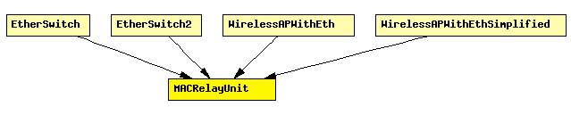

File: NetworkInterfaces/EtherSwitch/MACRelayUnit.ned
Prototype for modules providing Ethernet switch functionality. These modules handle the mapping between ports and MAC addresses, and forward frames (EtherFrame) to appropriate ports.
Functions:
Address caching is modeled by a fixed-size lookup table. When the table is full, the oldest address is kicked out of the cache.
Entries are also deleted if their age exceeds a certain limit.
If needed, address tables can be pre-loaded from text files at the beginning of the simulation; this controlled by the addressTableFile module parameter.
This module is not a concrete implementation, it just defines gates and parameters a MACRelayUnit should have. Concrete inplementations add capacity and performance aspects to the model (number of frames processed per second, amount of memory available in the switch, etc.) C++ implementations can subclass from the class MACRelayUnitBase.
Known implementations are MACRelayUnitNP and MACRelayUnitPP.
The following diagram shows usage relationships between modules, networks and channels. Unresolved module (and channel) types are missing from the diagram. Click here to see the full picture.
If a module type shows up more than once, that means it has been defined in more than one NED file.
| EtherSwitch | Model of an Ethernet switch. |
| EtherSwitch2 | Model of an Ethernet switch built with EtherMAC2, which means that all ports are operating in strictly full-duplex mode. Use EtherSwitch if you need half-duplex operation on some ports. |
| WirelessAPWithEth | Models a 802.11 Access Point with Ethernet ports. It can be used in conjunction with WirelessHost, or any other host model containing WirelessNicSTA. |
| WirelessAPWithEthSimplified | Models a 802.11 Access Point with Ethernet ports, but using a simplified NIC that does not support handovers. It can be used in conjunction with WirelessHostSimplified, or any other host model containing WirelessNicSTASimplified. |
| Name | Type | Description |
|---|---|---|
| addressTableFile | string | set to empty string if not used |
| addressTableSize | numeric | max size of address table |
| agingTime | numeric | max idle time for address table entries (if expires, entry is removed from the table) |
| Name | Direction | Description |
|---|---|---|
| lowerLayerIn [ ] | input | |
| lowerLayerOut [ ] | output |
simple MACRelayUnit parameters: addressTableFile : string, // set to empty string if not used addressTableSize : numeric, // max size of address table agingTime : numeric; // max idle time for address table entries // (if expires, entry is removed from the table) gates: in: lowerLayerIn[]; out: lowerLayerOut[]; endsimple